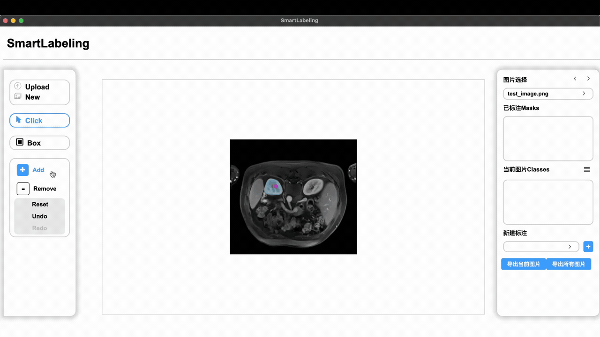
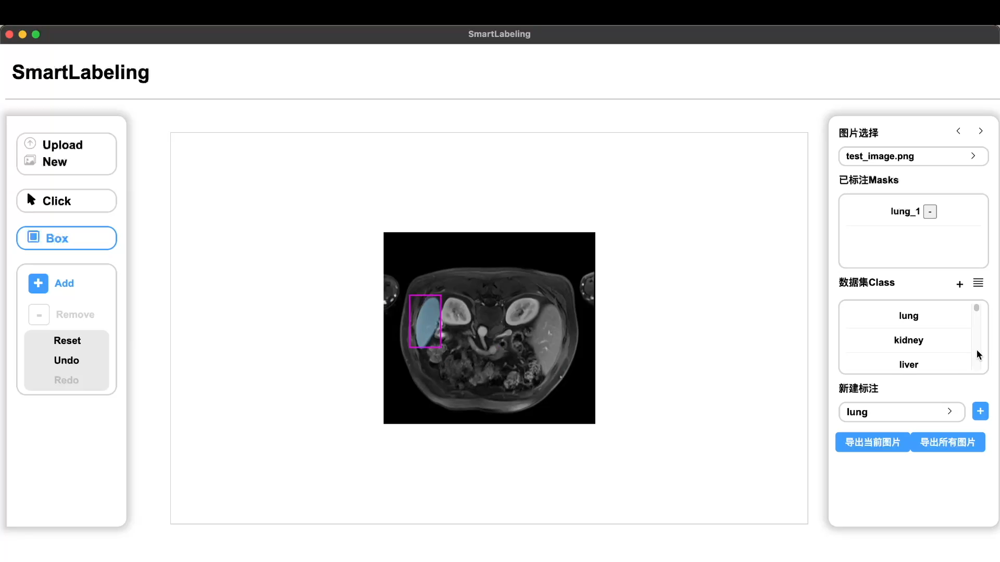
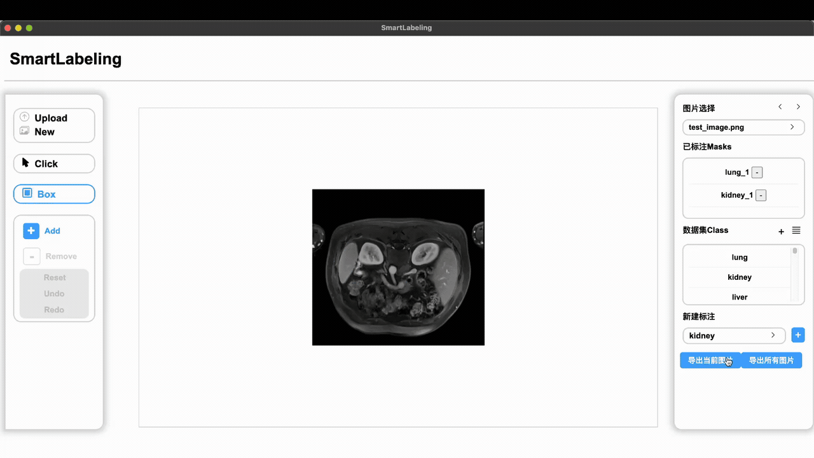

SmartLabeling 是我们在科研训练中做的医学图像标注工具。用户在图像上点选前景、背景或框出区域，SAM 根据提示生成分割掩码，CLIP 给出候选类别；用户确认、修正后，再把结果保存到项目中。
为什么做这个项目
医学图像中的器官和病灶需要专业判断，逐张手工勾画边界又很耗时间，不同人的标注结果也可能有差异。我们希望让模型先生成一个可修改的结果，减少重复描边的操作。最终标注仍由用户确认，模型给出的类别建议不会直接写入正式标注。
标注流程
创建项目后，用户导入图像并定义类别。服务端在导入时计算 SAM 的图像特征和 CLIP 的整图预特征，按图像缓存；类别名称则转换为文本特征，供后续识别使用。
用户在前端点选或画框后，FastAPI 接收提示，同时调用 SAM 和 CLIP：SAM 返回区域掩码，CLIP 返回候选类别。用户可以继续补点、撤销或重做，满意后确认标注，再切换到下一张图。导出时，系统保存掩码、YAML 类别映射和继续编辑所需的 cache.json。
系统展示
1. 点一下，生成候选掩码
左侧是点选、框选和撤销等工具，中间显示待标注图像，右侧管理类别与已确认的标注。这段演示中，用户选择 Click 工具并点击目标位置，图像上随即出现半透明的分割结果。
2. 框出目标范围
也可以切换到 Box 工具，用矩形框限定目标的大致范围。紫色框是用户给出的提示，框内的半透明区域是模型返回的掩码；最终保存的是分割区域，而不是这个矩形框。

3. 选择类别，确认标注
分割完成后，还需要给结果选择类别并确认。截图右侧可以看到项目中的 lung、kidney、liver 类别，以及已经提交的 lung_1 标注；中间仍显示当前正在操作的候选区域。类别名称是演示项目中的设置，这里展示的是类别管理与提交过程。

4. 导出并查看结果
最后点击导出，打开输出目录，就能查看保存下来的掩码。动图末尾的黑底灰色区域是导出的灰度掩码，可以脱离软件单独打开。这样，界面上的标注就成为了后续可以继续处理的文件。
